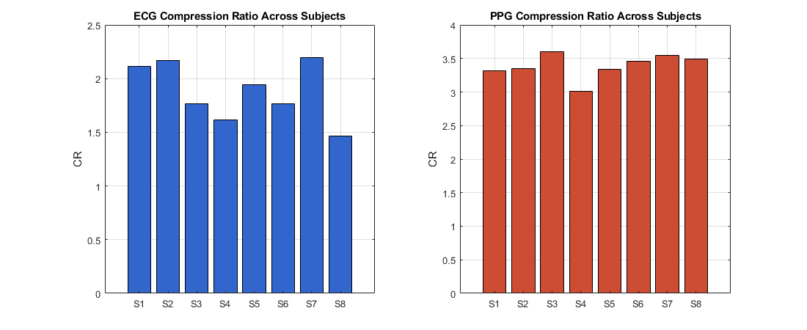
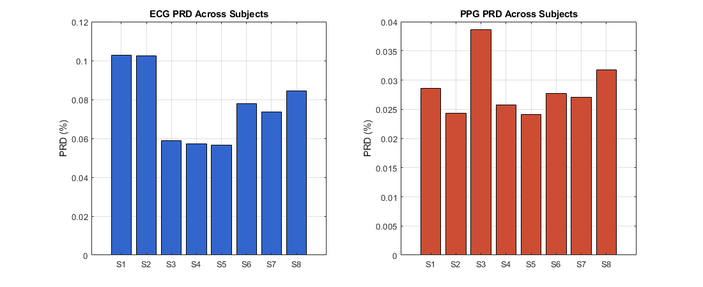
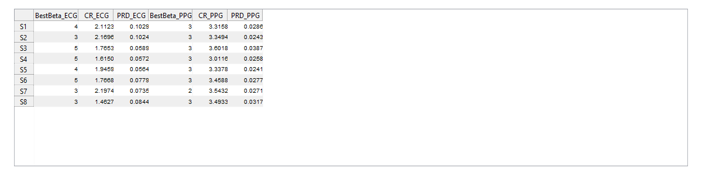

Contents
close all; clc; clear;
Settings
fs = 300; n_bits = 12; beta_list = [2 3 4 5 6]; % Put your 6 subject files here files = { 'doi-10.5683-sp2-nlb8it (1)/data/csv/0009_8min_signal.csv' 'doi-10.5683-sp2-nlb8it (1)/data/csv/0015_8min_signal.csv' 'doi-10.5683-sp2-nlb8it (1)/data/csv/0016_8min_signal.csv' 'doi-10.5683-sp2-nlb8it (1)/data/csv/0018_8min_signal.csv' 'doi-10.5683-sp2-nlb8it (1)/data/csv/0023_8min_signal.csv' 'doi-10.5683-sp2-nlb8it (1)/data/csv/0028_8min_signal.csv' 'doi-10.5683-sp2-nlb8it (1)/data/csv/0029_8min_signal.csv' 'doi-10.5683-sp2-nlb8it (1)/data/csv/0030_8min_signal.csv' }; subject_names = { 'S1' 'S2' 'S3' 'S4' 'S5' 'S6' 'S7' 'S8' }; duration_sec = 30; n_sel = duration_sec * fs;
Preallocate results
nS = numel(files); CR_ECG = zeros(nS,1); PRD_ECG = zeros(nS,1); BestBeta_ECG = zeros(nS,1); CR_PPG = zeros(nS,1); PRD_PPG = zeros(nS,1); BestBeta_PPG = zeros(nS,1);
Loop over subjects
for s = 1:nS T = readtable(files{s}); ecg = T.ecg_y; ppg = T.pleth_y; ecg = ecg(1:min(n_sel, length(ecg))); ppg = ppg(1:min(n_sel, length(ppg))); ecg_filt = bandpass_filter(ecg, fs, 0.5, 100); ppg_filt = bandpass_filter(ppg, fs, 0.5, 3.4); % Choose best beta by maximum CR best_cr_ecg = -inf; best_cr_ppg = -inf; for b = 1:numel(beta_list) beta = beta_list(b); [cE, qE, xminE, xmaxE] = compress_signal(ecg_filt, n_bits, beta); sigE_q = dequantize(qE, xminE, xmaxE, n_bits); crE = (length(ecg_filt) * n_bits) / cE.total_bits; prdE = prd_metric(ecg_filt, sigE_q); if crE > best_cr_ecg best_cr_ecg = crE; BestBeta_ECG(s) = beta; CR_ECG(s) = crE; PRD_ECG(s) = prdE; end [cP, qP, xminP, xmaxP] = compress_signal(ppg_filt, n_bits, beta); sigP_q = dequantize(qP, xminP, xmaxP, n_bits); crP = (length(ppg_filt) * n_bits) / cP.total_bits; prdP = prd_metric(ppg_filt, sigP_q); if crP > best_cr_ppg best_cr_ppg = crP; BestBeta_PPG(s) = beta; CR_PPG(s) = crP; PRD_PPG(s) = prdP; end end end
Summary table
ResultTable = table(subject_names(:), BestBeta_ECG, CR_ECG, PRD_ECG, ... BestBeta_PPG, CR_PPG, PRD_PPG, ... 'VariableNames', {'Subject','BestBeta_ECG','CR_ECG','PRD_ECG', ... 'BestBeta_PPG','CR_PPG','PRD_PPG'}); disp(ResultTable);
Subject BestBeta_ECG CR_ECG PRD_ECG BestBeta_PPG CR_PPG PRD_PPG
_______ ____________ ______ ________ ____________ ______ ________
{'S1'} 4 2.1123 0.10295 3 3.3158 0.028601
{'S2'} 3 2.1696 0.10237 3 3.3494 0.024349
{'S3'} 5 1.7653 0.058912 3 3.6018 0.038676
{'S4'} 5 1.615 0.057157 3 3.0116 0.025782
{'S5'} 4 1.9459 0.056449 3 3.3378 0.024104
{'S6'} 5 1.7668 0.077931 3 3.4588 0.027747
{'S7'} 3 2.1974 0.073522 2 3.5432 0.027063
{'S8'} 3 1.4627 0.084373 3 3.4933 0.031744
Save table
writetable(ResultTable, 'subject_comparison_results.csv');
Figure 1: CR comparison across subjects
figure('Name','CR Across Subjects','Position',[100 100 1100 450]); subplot(1,2,1); bar(CR_ECG, 'FaceColor',[0.2 0.4 0.8]); set(gca, 'XTickLabel', subject_names, 'XTick',1:nS); ylabel('CR'); title('ECG Compression Ratio Across Subjects'); grid on; subplot(1,2,2); bar(CR_PPG, 'FaceColor',[0.8 0.3 0.2]); set(gca, 'XTickLabel', subject_names, 'XTick',1:nS); ylabel('CR'); title('PPG Compression Ratio Across Subjects'); grid on;

Figure 2: PRD comparison across subjects
figure('Name','PRD Across Subjects','Position',[150 150 1100 450]); subplot(1,2,1); bar(PRD_ECG, 'FaceColor',[0.2 0.4 0.8]); set(gca, 'XTickLabel', subject_names, 'XTick',1:nS); ylabel('PRD (%)'); title('ECG PRD Across Subjects'); grid on; subplot(1,2,2); bar(PRD_PPG, 'FaceColor',[0.8 0.3 0.2]); set(gca, 'XTickLabel', subject_names, 'XTick',1:nS); ylabel('PRD (%)'); title('PPG PRD Across Subjects'); grid on;

Figure 3: Table in figure form
figure('Name','Subject Comparison Table','Position',[100 100 1200 300]); dataCell = [table2cell(ResultTable(:,2:end))]; % numeric columns only uitable('Data', dataCell, ... 'ColumnName', ResultTable.Properties.VariableNames(2:end), ... 'RowName', ResultTable.Subject, ... 'Units', 'normalized', ... 'Position', [0.02 0.05 0.96 0.9]);

================= Local functions =================
function x_filt = bandpass_filter(x, fs, f_low, f_high) [b, a] = butter(2, [f_low f_high]/(fs/2), 'bandpass'); x_filt = filtfilt(b, a, x); end function [q, xmin, xmax] = quantize_signal(x, n_bits) xmin = min(x); xmax = max(x); levels = 2^n_bits - 1; q = round((x - xmin) / (xmax - xmin) * levels); end function x_rec = dequantize(q, xmin, xmax, n_bits) levels = 2^n_bits - 1; x_rec = double(q) / levels * (xmax - xmin) + xmin; end function val = prd_metric(x, xq) val = 100 * sqrt(sum((x - xq).^2) / sum(x.^2)); end function nbits = bits_needed(x) if isempty(x) nbits = 1; else m = max(abs(x)); if m == 0 nbits = 1; else nbits = ceil(log2(m + 2)); end end end function [c, q, xmin, xmax] = compress_signal(sig, n_bits, beta) [q, xmin, xmax] = quantize_signal(sig, n_bits); q = double(q); d1 = diff(q); d2 = diff(d1); beta_max = 2^(beta-1) - 1; alpha = beta_max + 1; theta = []; psi = []; xi = []; i = 1; n = length(d2); while i <= n val = d2(i); if val == 0 run = 0; while i <= n && d2(i) == 0 run = run + 1; i = i + 1; end theta(end+1) = 0; psi(end+1) = run; else if val >= -beta_max && val <= beta_max theta(end+1) = val; else theta(end+1) = alpha; xi(end+1) = val; end i = i + 1; end end c.theta = theta; c.psi = psi; c.xi = xi; c.alpha = alpha; c.first_q = q(1); c.first_d1 = d1(1); c.n_samples = length(sig); c.theta_bits = length(theta) * beta; c.psi_bits = length(psi) * bits_needed(psi); c.xi_bits = length(xi) * bits_needed(xi); c.overhead_bits = 2 * n_bits; c.total_bits = c.theta_bits + c.psi_bits + c.xi_bits + c.overhead_bits; end